Líneas de metro
Aunque a mucha gente el senderismo urbano no le llame especialmente
la atención, puedo afirmar con certeza que ese no es mi caso. La travesía
que supone andar largas distancias por la ciudad, aunque recompense menos
que andar por el campo, sigue constituyendo un reto de gran magnitud que
ayuda a desarrollar disciplina y cultura urbana a todo aquel al que lo practica.
Falto de rutas de ciudad, decidí embarcarme en diversas rutas urbanas completando
trayectos que variaron desde los 14 kilómetros hasta los 50 kilómetros un solo día. En total,
el tiempo que estuve andando probablemente llegará a las 35 horas: 14 horas de la línea 12 y 7 o 6
horas por todas las demás líneas.
Línea 6
La primera línea que anduve con mis compañeros de clase fue la línea 6. Al ser la primera vez
que intentábamos algo así, la jornada se nos presentaba como un reto, pero aunque un poco cansada
fue reconfortante y pudimos crecer en nuestros conocimientos urbanos espaciales y nuestra capacidad física.
El recorrido total fue de 24 km en un día.
Línea 12
El día en el que dos amigos míos y yo hicimos la línea 12
podría ser calificado como un desvarío que duró lo suficiente como
para que lo inverosímil de la aventura no se nos apareciera como una locura
hasta que era demasiado tarde (quedaban solo 20km cuando nos dimos cuenta de lo
que estábamos haciendo). El recorrido de la línea 12
consta en total de 40 km, pero si se recorre andando por la superficie la distancia
sube a 54 km. Nos presentamos a las 8 de la mañana en la primera estación, puerta del sur
,para recorrer la línea circular. Puedo decir con certeza que es la ruta más
larga que hecho en toda mi vida y que la experiencia me cambió haciéndome más
resiliente y problablemente, menos cuerdo. Llegamos a la estación inicial a las diez y media
de la tarde, orgullosos por lo conseguido.

Parada final
Líneas 2 y 4
Aparte de las líneas mencionadas anteriormente, anduve con mis compañeros
de clase las líneas 2 y 4, mucho más fáciles, pero que requirieron aún así
un esfuezo considerable y una formación física esencial.
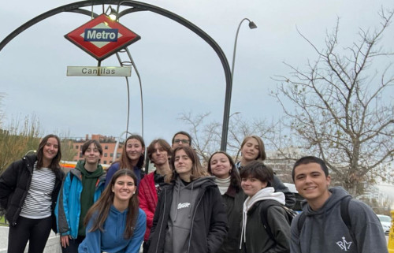
Una parada de la línea 2
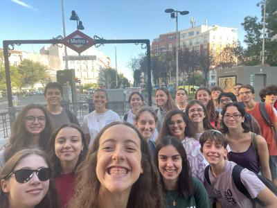
Una parada de la línea 4
Rutas con los scouts
Los scouts son una parte muy importante de mi vida y aparte de realizar
voluntariados para mi servicio, realizamos diversas rutas periódicamente.
Esta actividad física me ayuda no solo físicamente sino mentalmente, ya que
normalmente las rutas se localizan en paisajes muy bonitos. Aproximadamente
he estado haciendo una ruta el mes desde que comencé mi programa CAS, ya que
en las acampadas que hacemos requerimos subir a un sitio, para lo que recorremos
un camino montañoso. Voy a contar mi experiencia en las rutas más memorables y lo que significaron
para mí, pero todas las travesías que he hecho con mi grupo se pueden encontrar en
los perfiles de instagram de la
esculta y el clan
del grupo 1 Santiago el mayor.
Ruta de los Cahorros de Monachil
El año pasado, en el campamento de Navidad de mi esculta, hicimos una impresionante ruta
por los Cahorros de Monachil, que pasaba por puentes colgantes y acantilados. Este recorrido
no me proporcionó solo vigor físico, sino conciencia de mis alrededores y un pavor a caerme
por un barranco, miedo que se transformó en respeto y respeto que se convirtió en fortaleza
mental.
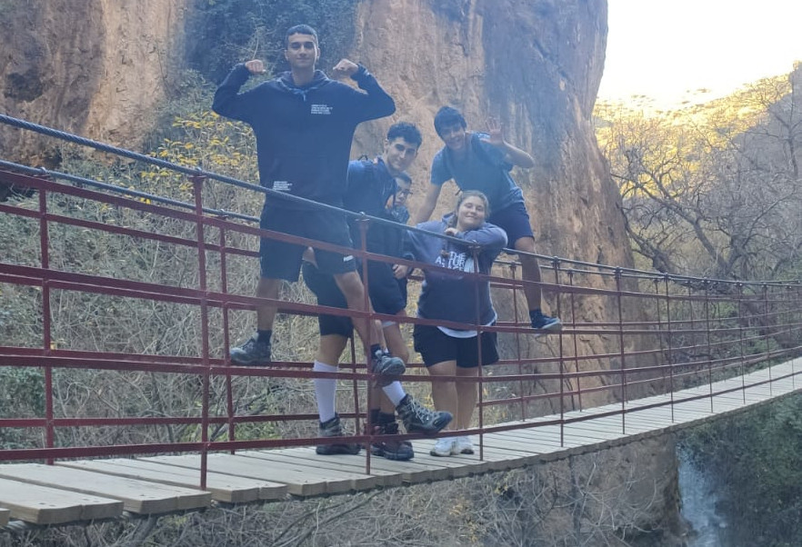
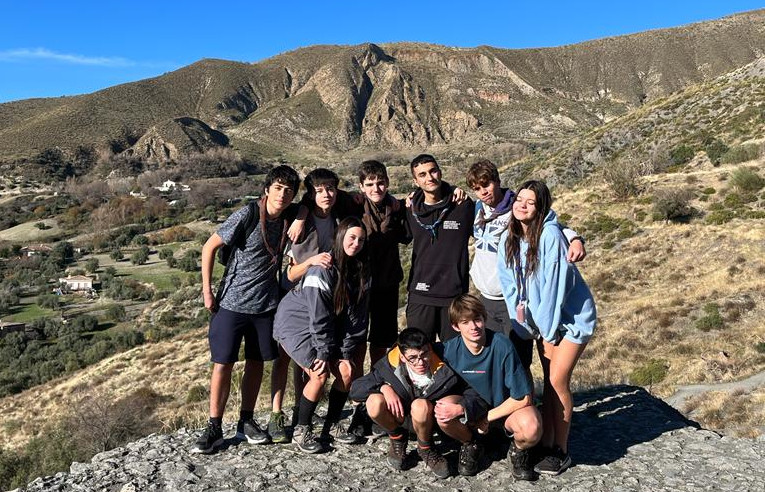
Ruta en Valencia
El año pasado, en el campamento de Semana Santa de mi esculta, realizamos una ruta
por la Sierra Onil de Velencia. Como en todas las rutas, disfruté del desafío y del
esfuezo físico para volverme más fuerte tras la experiencia. El paisaje montañoso abierto
y lo escarpado del trayecto contribuyeron a volverme más resiliente a los elementos y la
adversidad en general.
Descenso del Sella
El anterior verano, con mi esculta, tuve la oportunidad de experimentar una de las mejores
"rutas" de mi vida: una ruta, o una travesía en kayak. Me monté con amigo en el nuestro y
comenzamos el descenso. Esta ruta me causó un gran impresión y un gran reto físico debido a
lo poco acostumbrado que estaba a utilizar mis brazos un periodo prolongado. En retrospectiva,
puedo decir que fue una experiencia muy gratificante y que me enseñó toda una nueva manera de
moverse que nunca había pensado como algo viable o agradable.
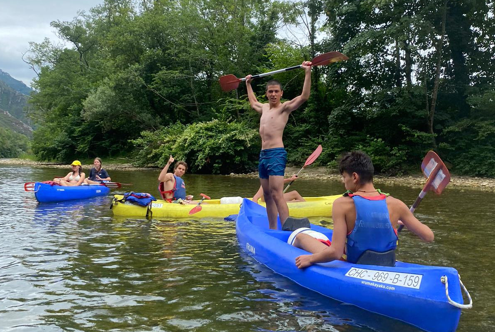
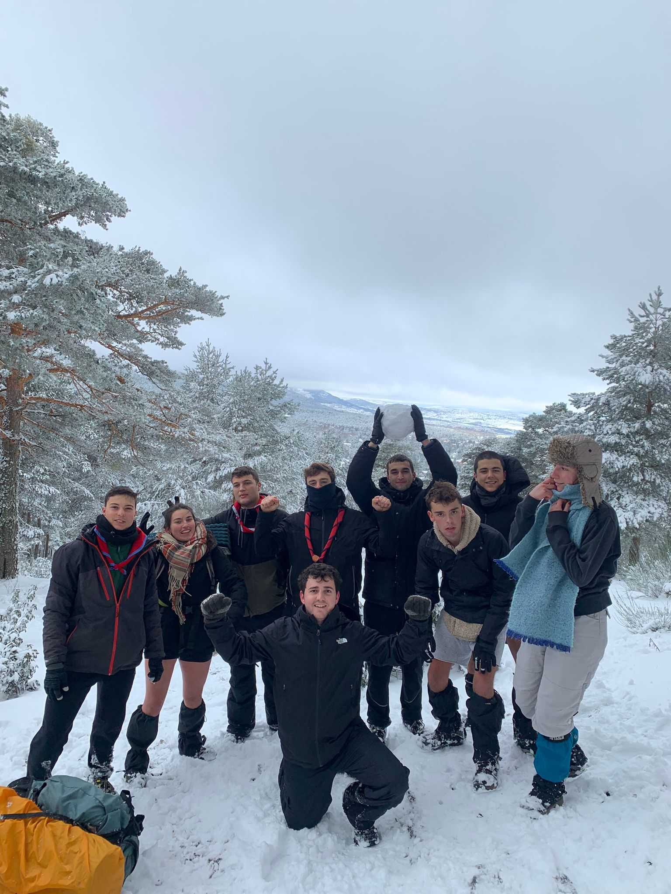
La ruta de la sociedad de la nieve
La mayoría de las rutas que hago se sitúan en un ambiente y un clima mediterráneos, donde
el frío o el calor son molestos, pero definitivamente no son un peligro real. Esta vez en los scouts,
al ver una montaña absurdamente repleta de nieve (70 cm) y en pantalones cortos decidimos embarcarnos
en una ruta que no era precisamente corta (7 km con 800 m de desnivel solo ida) acompañados de la dulce
frivolidad de la nieve. Este trayecto, además de representar una amenaza para nuestra salud me enseñó
a ser más precavido con respecto a los designios de la naturaleza, además de presentarme el reto de aguantar
un frío abrasador con el peso de un macuto y de mantener un ritmo constante para llegar a mi casa en buenas
condiciones.
Ruta en Navacerrada
Habiendo destacado ya las rutas más memorables explicaré cómo hacemos las rutas normales,
que tratamos de realizar como mínimo una vez al mes para fortalecer nuestros lazos con la
naturaleza y disfrutar de esta. En la última ocasión me fui de ruta a Navacerrada con el clan
y anduvimos unos 14 km por los siete picos más altos de Navacerrada. El ascenso fue arduo, pero
corto y con unas vistas alucinantes que me ayudaron a sobrevenir la inclinada pendiente. Puedo concluir
que las rutas que hago con los scouts no solo refuerzan mis aptitudes físicas sino también el resto de
mi vida.
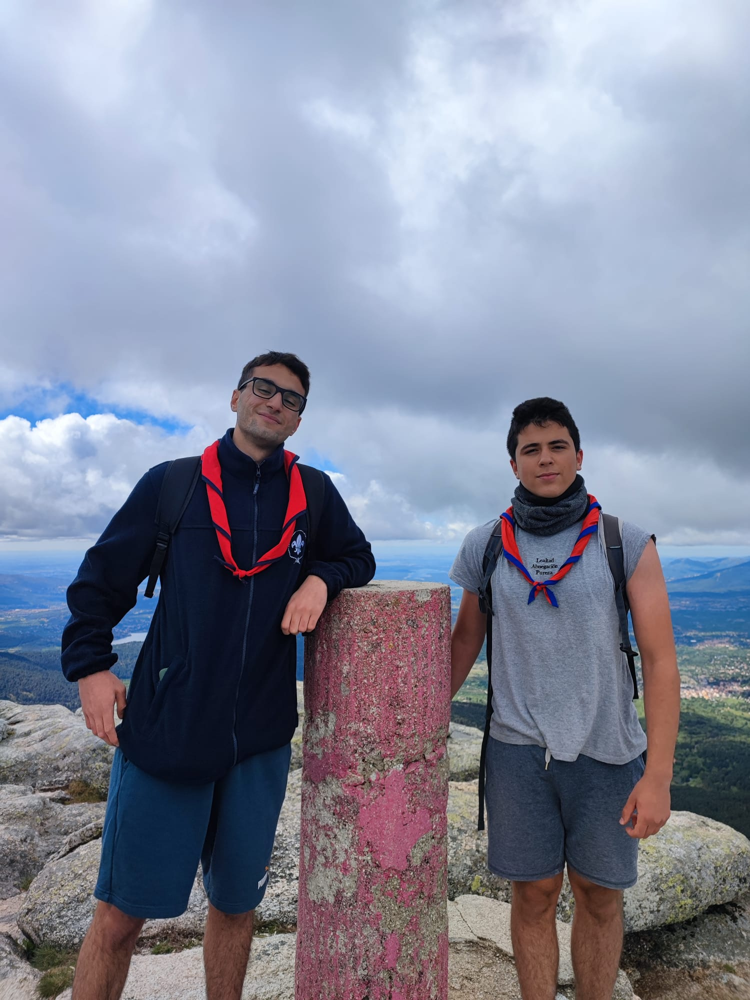
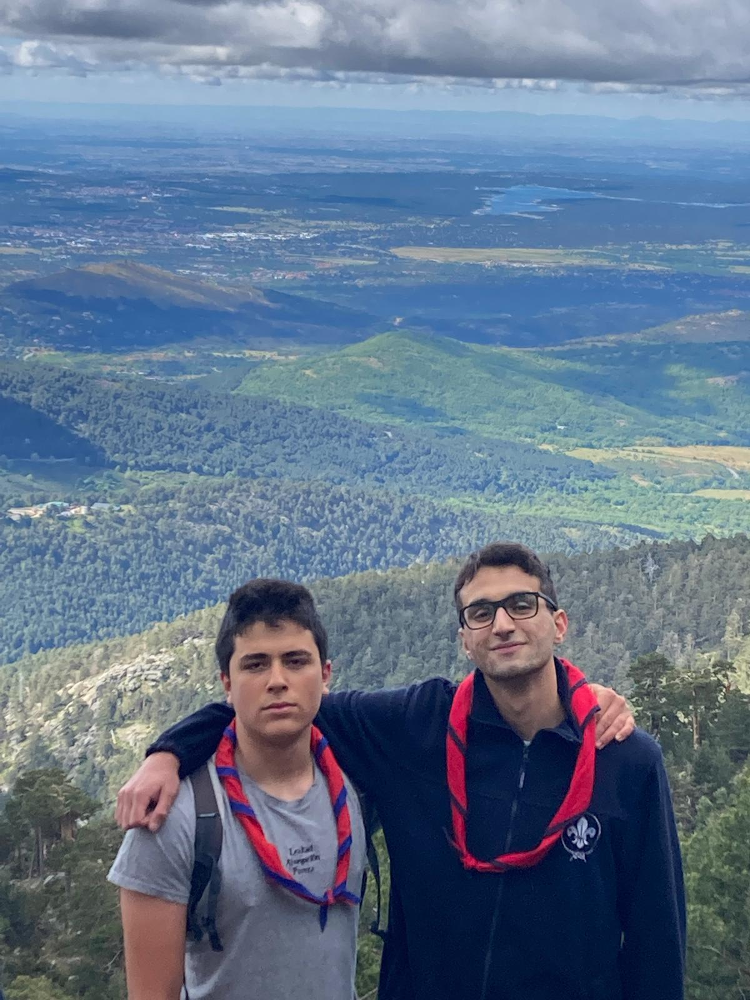
Carreras con mi padre
Aunque correr largas distancias no sea mi principal afición he de reconocer
que me de vez en cuanto un reto físico de este tipo me llama la atención, no solo
porque mejora mi rendimiento físico sino porque también aumenta mi capacidad de
concentración y de disciplinarme en general. En estos dos años he hecho dos carreras.
Para prepararme, destaco que tuve periodos de preparación en los que calculo que habré
invertido unas 20 horas y corrido unos 200 km. El cénit de mi preparación se materializa
en el éxito que conlleva completar una carrera de 10 km y un medio maratón (21 km).
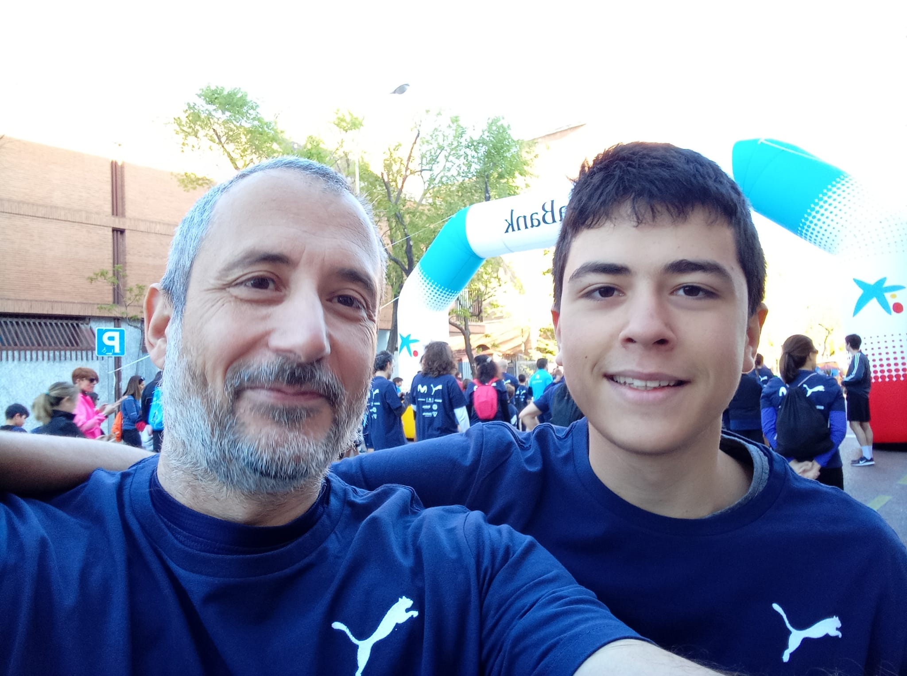
Carrera de la Caixa por la inclusión social
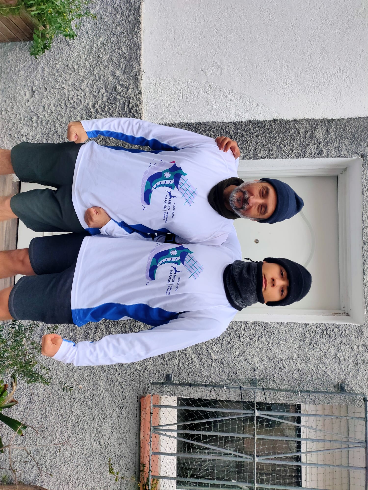
Medio maratón fuencarral
Entre ambos eventos ha hubo un año de diferencia y bastante preparación, ya que
hay una distancia considerable entre los primeros 10 km de uno y el primer medio
maratón, por lo que concluyo que he mejorado en el tiempo transcurrido.
Calistenia
Durante todo el curso 2022-2023 estuve haciendo calistenia consistentemente 2-3 días a la semana. Los entrenamientos no
requerían ser muy variados, puesto que mi principal objetivo no era ganar masa muscular ni adquirir nuevas habilidades debido a la falta
de tiempo. Solo necesité mantenerme en una forma física razonable para mantener mi salud mental y bienestar general, los cuales eran
mis principales metas cuando empecé este hábito. Todos los workouts(entrenamientos) son de nivel básico-intermedio y con tres meses
de preparación cualquier persona podría hacer cualquiera de ellos.
Natación
Solo haciendo 2-3 sesiones de calistenia a la semana, percibía que me faltaba un poco más de actividad física. No quería añadir
más sesiones, puesto que me requeriría tener que añadir más entrenamientos. Además, quería obtener los beneficios de la salud que nadar conviene,
que son mayores que los de realizar calistenia. Por tanto, acordé que iría a nadar una vez a la semana. El
entrenamiento que escogí me lo proporciono
el youtuber "skillsNT" y era un modelo para poder nadar 4 km seguidos. Evidentemente, no llegue a esa marca porque tenía poca experiencia y poco tiempo,
pero conseguí nadar 1,5 km seguidos lo cual para mí era un logro notable. Entreno en la piscina mostrada en la foto (Gofit Peñagrande).
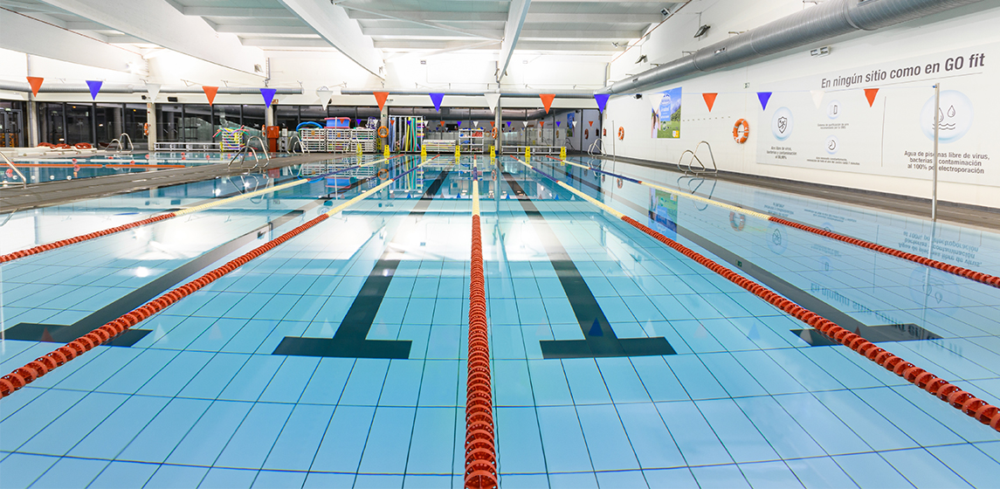